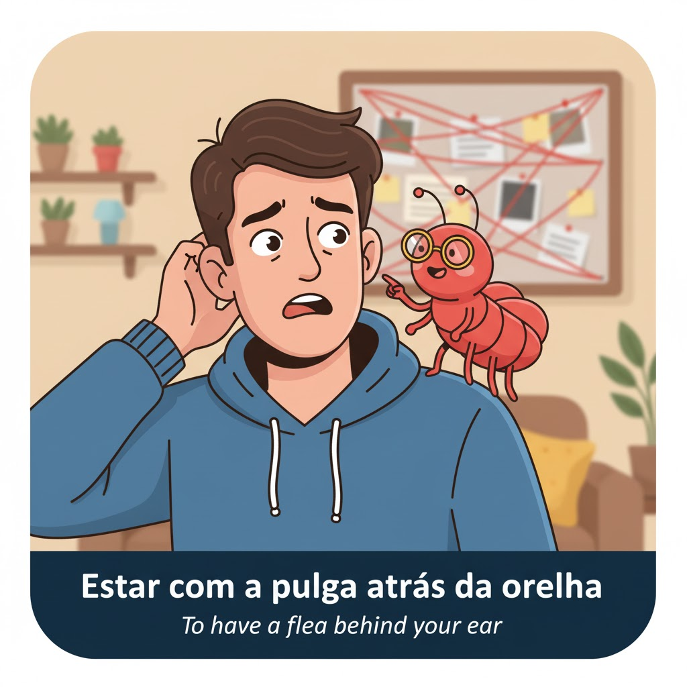
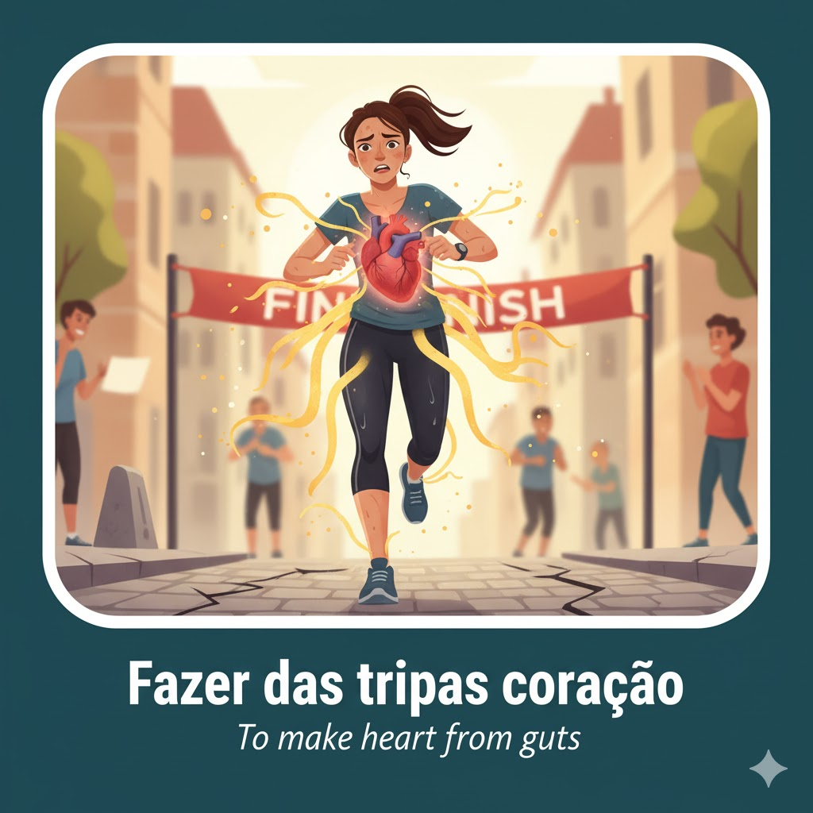
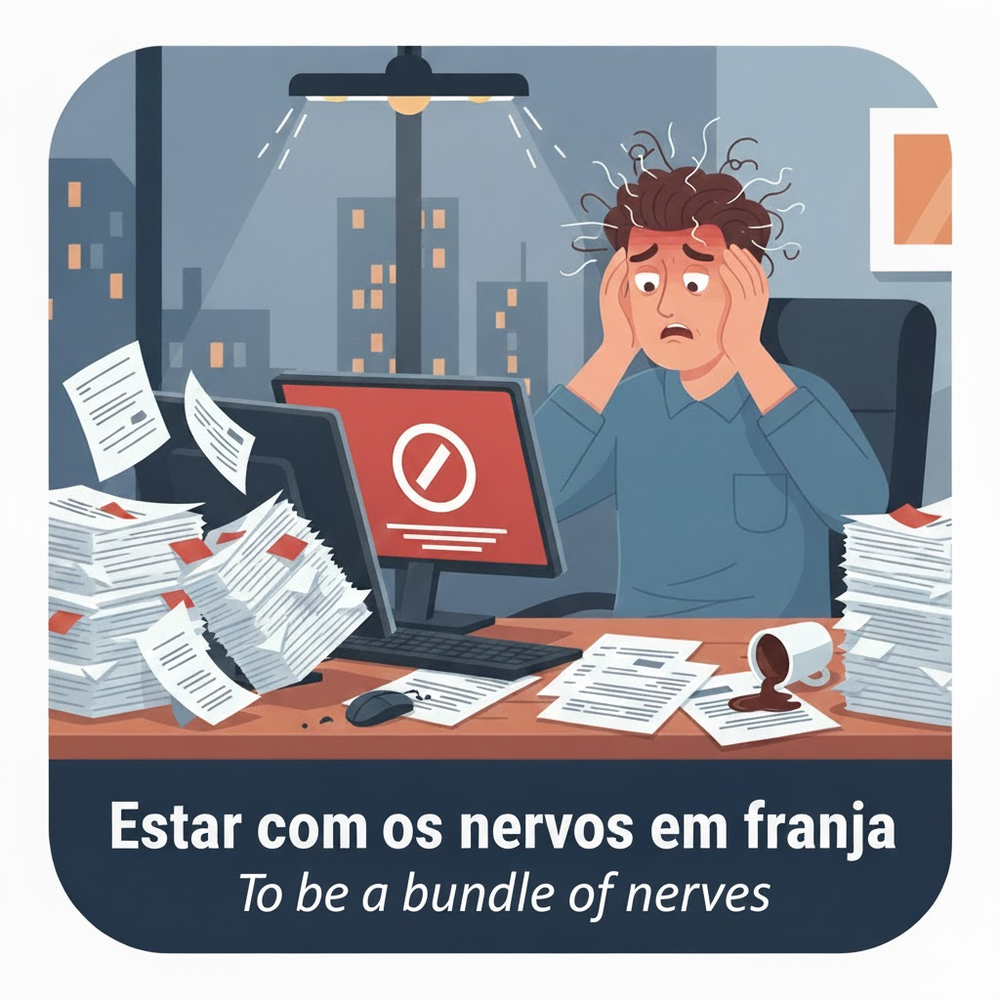

O português é rico em expressões que descrevem emoções e estados de espírito. Estas expressões vão ajudar-te a entender e a comunicar sentimentos de forma mais autêntica.
Lista Essencial

Estar com a pulga atrás da orelha
Tradução Literal: To have a flea behind the ear
**English Meaning:** To be **suspicious** or to have a doubt about something, feeling uneasy and watchful.
Exemplo: Ele não me contou tudo, fiquei com a pulga atrás da orelha.

Fazer das tripas coração
Tradução Literal: To make heart from guts
**English Meaning:** To make a **huge effort** or to gather all one's courage and strength to overcome a difficult situation.
Exemplo: Ela fez das tripas coração para terminar a corrida, mesmo estando exausta.

Estar com os nervos em franja
Tradução Literal: To have one's nerves in fringes
**English Meaning:** To be extremely **nervous, anxious, or irritable**, at the limit of one's patience.
Exemplo: Depois de uma semana de exames, estava com os nervos em franja.